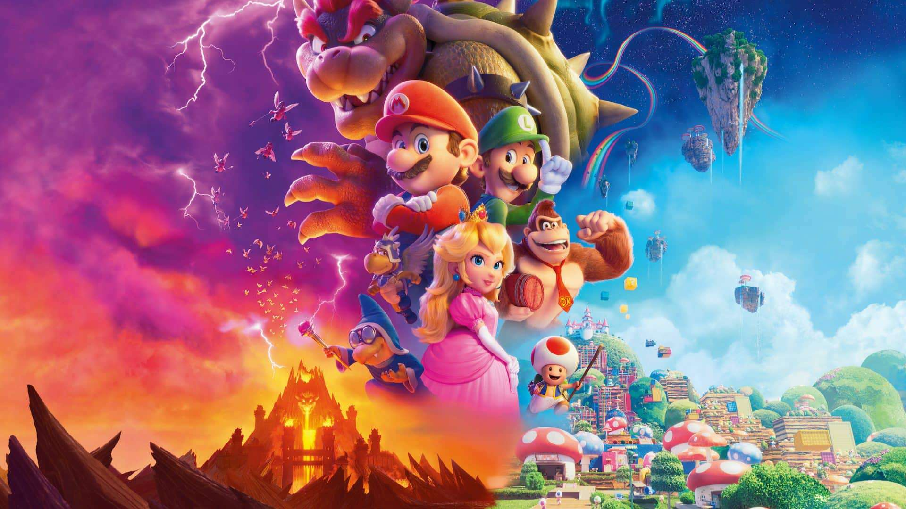

O jogador começa com Mario ou Luigi chegando ao castelo de Bowser para resgatar a Princesa Peach. Ao entrar no castelo, o jogador encontra uma bifurcação: um caminho iluminado por tochas e outro escuro e cheio de ecos misteriosos. Cada escolha leva a uma situação diferente.